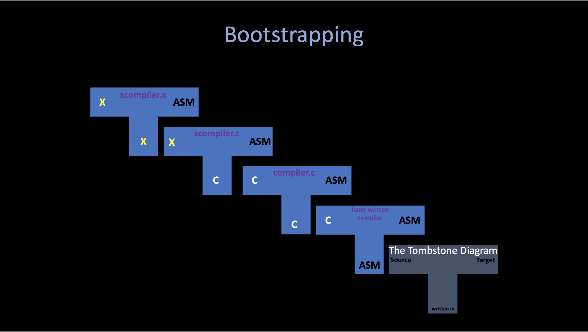

An introduction to creating a C compiler - weicc
1. Thompson 1984

1. Reflections on Trusting Trust
To begin with, I want to introduce this old but not outdated famous speech by ken Thompson when he won the Turing Award in 1984. Namely "Reflections on Trusting Trust".
In this speech, thompson mentioned a lot of special topics, including program saftey, compiler... And I want to just introduce the first part of this speech (related to the compiler), which seems shows the solution of some intersting but non-obvious problems. If you feel interested in these topic, I highly recommend you to read the original pdf.
Intro Stage: How do we know a program is safe?
-
Inspect the program's source code
-
But isn't the program source code compiled by a compiler?
- Then we inspect the compiler's source code.
-
But is't the compiler compiled by another compiler?
- Self-hostng compilers compile themselves.
- e.g, gcc compiles gcc
-
......
Stage i - A program that produces itself (quines)
Problem: Write a source program that, when compiled and executed, will produce as output an exact copy of its source. (Thompson)
There are a couple of different strategies to writing quines. The obvious one is to just write code that opens the code file and prints it out. But the more interesting ones involve language features that allow for self-embedding (using variables) and a lot of trial and error is involved.
quine.c is one of the implementation, I found it very intersting while implementing it that if you take care of the variables inside the program, you may implement your own version very easy (careful enough). However, if you try to use no variables (TEXT) in quine.c it seems impossible to implement quine.
For example, first, whatever the program looks like, at some point it has to print something:
print ...
However, what should it print? itself, so it needs to print the "print" command:
print "print ..."
What should it print next? Well, in the mean time the program grew, so it needs to print the string starting with "print" too!
print "print \"print ... \""
..... It seems that we are dropping into an "endless rabbit hole": The string "print \"" is repeated over and over again. And it would be nice to put the repeating part into a variable:
a = "a = @\nprint a.replace(\"@\", quoted(a))"
print a.replace("@", quoted(a))
Which solves this problem perfectly and precisely !
What can we learn from quine?
A quine is a computer program that output its own source code. In other words, a quine is sort of like a list of instructions for writing the insturctions themselves, which called "self--reference" or "recursion".
1. Ouroboros
The Ouroboros is one intersting practice of quine. This program shows that any program can be easily "written" by another program.
Please refer to Ouroboros.java and Ouroboros.cpp (better run them).
You can also check the output in codepad.org, This C++ program outputs the source for a Java program that outputs the original C++ code. Also another intersting example: An uroboros program with 100+ programming languages.
Ouroboros.cpp -------> Ouroboros.java
<-------

Ihcoyc at English Wikipedia, Public domain, via Wikimedia Commons
humans DNA sequencing themselves is considered valuable by some and seems oddly similar to the idea of computer programs printing their own source code.
2. Modern Compiler
It seems to me that mordern compilers are doing such "conversion" - it accepts any semantic language in some area of language syntax and try to produce this language in another format to actually do its work rather than simply print it out.
For example: The C compiler do its work by translate the C language into Assembly, and then hand it to CPU to do the actual work.
Stage ii - An example of ccc (Compiler that Compiles a Compiler)
The C compiler is written in C, and you may wonder how does it happends, or some sort of "chicken and egg" problems.
i. A Custom C "Compiler"
In this case, I will use a specific example from "using C compiler to implement a "new" language that written in itself".
Imagine now we have a compiler compile.c that is written in c. Basically it just a wrapper of gcc (it will simply call gcc and pass the user command into it.)
You can test this compiler by compiling any c program you like, in our case, I use gcc to simply compile our compiler.c first, and use this new compiled compiler to compile hw.c by executing ./compiler hw.c -o hw.out and then run hw.out.
Now you can see it success, and print hello world successfully! What we are going to do now is trying to create another language based on our compiler.c by adding some new features into c language.
ii. The X Programming Language
Let's say now in our new language, we want to use uint1 type to replace char type in c language. How can we do that?
Well, seems it is relatively simple in our case. We can also use C program to implement this new compiler: Please check the source code of xcompiler.c.
Basically, the only difference between our new language X compiler and the original c compiler is these few lines. And what it does is just simply replace all uint1 in our new language into char, and then call gcc to compile it.
/* Our custom X language with uint1 data type */
uint1 newDataType[6] = {'u', 'i', 'n', 't', '1', '\0'};
uint1 * whereUint;
// Replace all instances of uint1 with char
while ((whereUint = strstr(buffer, newDataType)) != NULL) {
strncpy(whereUint, "char ", 5);
}
Now we use our previous compiler to compile our new "X" compiler. ./compiler xcompiler.c -o xcompilerc and then use this new compiler to compile our new language hw.x and execute it.
// hw.x
#include <stdio.h>
int main() {
uint1 text[] = "hello world";
printf("%s\n", text);
return 0;
}
As we can see, our new language "X" is pretty much the same as C, except we use uint1 to represent char.
Using our new compiler xcompilerc, we can compile this hw.x, after execute it, it still prints out "hello world" to the screen !
iii. The X Compiler that is Written in X
Now we have the X programming language, with the xcompiler.c as its compiler. The next mission is to solve the problem we introduced at the beginning of this section: Is it possible to have a programming language that its compiler is written in its own? -- We want to create the X compiler that is written in X !
It is very simple: we just need to create another file called xcompiler.x, it does nothing special compared to xcompiler.c with replacing all occurrences of char in the original c file with uint1 to fit the X programming language standard.
Now after we use the xcompilerc to compiler this X programming language file xcompiler.x by executing ./xcompilerc xcompiler.x -o xcompiler we get a X compiler xcompiler that is written in X.
If you are quite confusing about these whole process (i, ii and iii). I highly recommend you to go through the whole procedure by yourself. The source code can be found in gist.
Bootstrapping
This procedure I showed above is also known as "Bootstrapping".
Bootstrapping is the process by which simple language is used to translate more complicated program, which in turn may handle an even more complicated program so on...
To wrap up, when writing the first X language compiler with the intention of "self-hosting", you need to writing using an existing Y language that is different from X, and when the compiler is more complete, you need to rewrite the compiler itself from Y language to X language (xcompilerc).

The "chicken or egg" is yet another bootstrapping problem: Imagine the chicken is
Xin our example, and another chicken-like birds proto-chicken isC. One day the proto-chicken(xcompiler.c) lays a chicken egg(xcompiler.x->xcompiler) with some unknown changes (maybe its DNA changes), and the chicken can now produce new chicken eggs (hw.x)...
So there must be the "first" compiler, or not?
In the "X" language example, we simply using an existing C compiler compiler.c to implement our new language, but what if you don't have an existing compiler.Then we have no choice but to write in another language.
Going back to the lineage of a compiler for a modern complex programming language, another compiler used to compile an implementation of that language, and so on. eventually someone used machine language directly in the early days of computers.
The current compilers start with a very small assembller ancestors, just like the origin of life. So almost any existing executable is an indirect descendant of its primitive assembler.
2. Meet weicc
As we mentioned above, if you already have an implementation of language X, there is no logical contradicton in creating a new language X compiler using that language itself. If you want to self-host, you can simply proceed with the development with an existing compiler and switch when your own is complete.
And that is exactly what I am trying to implement in this series - A C language compiler that is implement using C. Initially I plan to create a new language, but I can't come up with any new features or peculiarities for this new language, even if I implement it successfully, it may just a mediocre, buggy and flawed language. Designing and implementing the original language is good in terms of improving the design sense of the language, but as I mentioned above, it also has its pitfalls: You may design some specification of your own language intentionally where implementation is cumbersome.
After watching the chibicc by Rui, I finially choose to implement a C compiler from scratch for these reasons:
- C language has clear and reasonable specification
- C compiler translate C program into machine language (assembly), so by creating a compiler, I may learn how program works in real CPU at the same time C itself.
- C is so widely used that once the compiler works, you can compile and play with third-party source code:
- Xv6 - a mini unix operating system that I introduced in os.
- Linux (if the compiler is perfect enough)
- C++ has such a huge language specification that it is impossible to easily create a self-made compiler.
- There are already lots of self-implemented C compilers for reference, such as:
- chibicc by Rui Ueyama.
- lcc by Dave Hanson.
- SmallerC by Alexey Frunze
- TinyCC by Fabrice Bellard
- ....
I call this new compiler weicc. You can find the newest update of this project on https://github.com/Angold-4/weicc. I pronounce weicc as way cee cee. "wei" means "mini" or "small" in Chinese. "cc" stands for C compiler.
I am going to blog the journey while I implement this compiler, also as weicc's documentation, this is the first, soon the second, and so on... When I am writing this first document, I had been working on weicc for a while, and I had Implemented a lot of features: variables, statements, control structures... And I believe that as the documentation continues to grow, soon I will have a self-made C compiler.
The compiler can be conceptly divided into multiple stages such as lexical analysis, parsing and code generation. A common textbook approach would be to have chapters on each topic. In this way, while it does reduce such complexity by splitting the compilation process into several stages, I still don't think it is very easy to implement in stages.
The reason is that with the development method created for each stage, it is not possible to run the compiler until all stages are completed, which is sometimes couterintuitive (In my opinion, nothing is hard, they are just complex, and if we want to learn something, we have to start simple, because complex usually means hard and understanding based on this "hard" shell usually means decisively mistake.)
In this implementation, I decided to take a different approach. We start from a "propreitary language" with a very simple language specification such as a calculator in order to go through and understand each compiler stages. Then we will add functionality to the "unique language" throughout our journey, and eventually developing it to match C.
weicc is influenced (at least trying to) by Rob Pike's way of thinking about programming. Rob Pike is a former colleague of C author Dennis Ritchie, he created go language and UTF-8 with Ken Thompson.
I quote these five rules in the index page of cs, I really like the Rule 5, which can be shortened to "write stubid code that uses smart objects."
3. Taste: A Simple "add and subtract" Compiler
Before we actually get into the weicc compiler, let's look at a simple example of "add and substract" Compiler.
If your machine is running on Linux, you may copy the following code below and run it directly. Otherwise, if you are in MacOS, you may change the main in line 14 and 15 into _main (add prefix _) in order to run it*.
// main.c
#include <stdio.h>
#include <stdlib.h>
int main(int argc, char **argv) {
if (argc != 2) {
fprintf(stderr, "Args Err!\n");
return 1;
}
char *p = argv[1]; // char pointer
printf(".intel_syntax noprefix\n");
printf(".globl main\n");
printf("main:\n");
printf(" mov rax, %ld\n", strtol(p, &p, 10)); // base 10
while (*p) {
if (*p == '+') {
p++;
printf(" add rax, %ld\n", strtol(p, &p, 10));
continue;
}
if (*p == '-') {
p++;
printf(" sub rax, %ld\n", strtol(p, &p, 10));
continue;
}
fprintf(stderr, "invalid input: %c\n", *p);
return 1;
}
printf(" ret\n");
return 0;
}
This small piece of code is very simple, and easy to understand. Basically it just prepared to read statements like "num(+/-num)*"
And store answers in %rax register, which is the return register of x86-based CPUs.
An execution example is shown below:
$ gcc main.c -o main
$ ./main '5+20-4' > tmp.s
.intel_syntax noprefix
.globl main
main:
mov rax, 5
add rax, 20
sub rax, 4
ret
$ gcc -o tmp tmp.s
$ ./tmp
$ echo $?
21
It is worth mentioning that in this series of weicc development notes. I'll trying to avoid putting this big chunk of code in the main body of my post. Instead, I will put the code into my corresbonding weicc commits, and put link there for your easy reference. And also I won't talk too much about the code itself, because I try not to use many complex algorithms (I can't use them freely either) and write comments as much as possible (most of them were brute force).
This is a very interesting piece of code, and it is perfect as a dessert, giving us some sort of taste of compiler or compilation procedure.
Thanks for reading this! If you have any questions or suggestions, please email me @wangold4w@gmail.com.
Development environment assumed in this series*
Linux (Ubuntu)
I use Linux as my developing environment (especially Ubuntu 20.04) that runs on so-called ordinary PCs such as Intel and AMD. If you are using ubuntu, you may install the command used in this manual by executing the following command:
$ sudo apt update
$ sudo apt install -y gcc make git binutils libc6-dev
MacOS
MacOS is fairly compatible with Linux at the source level of the assembly, but it's not fully compatible (specifically, it doesn't support a feature called "static linking"). Due to this problem, I think it is very hard to implement a MacOS Version of C compiler. (It might can be implemented, but there may be various incompatibilities in every detail). I'll trying to implement a MacOS version of weicc. You may refer to the macos branch to check the updates.
Windows (WSL)
Windows is not compatible with Linux at the assembly source level. However, with Windows 10, it is possible to run Linux on Windows like a single application, and by using it, you can proceed with development on Windows. An application called Windows Subsystem for Linux (WSL) is the Linux compatible environment. When practicing the contents of this book on Windows, please install WSL and proceed with development in it.
References
- Reflections on Trusting Trust, 1984, Thompson
- VCF East 2019 -- Brian Kernighan interviews Ken Thompson
- AT&T Archives: The UNIX Operating System
- Ken Thompson and Dennis Ritchie Explain UNIX (Bell Labs)
- 2011 (27th) Japan Prize; Dr. Ritchie / Dr. Thompson
- 低レイヤを知りたい人のためのCコンパイラ作成入門 by Rui Ueyama
This page was last edited on 17 May 2022, at 15:48 (UTC), by Angold Wang.